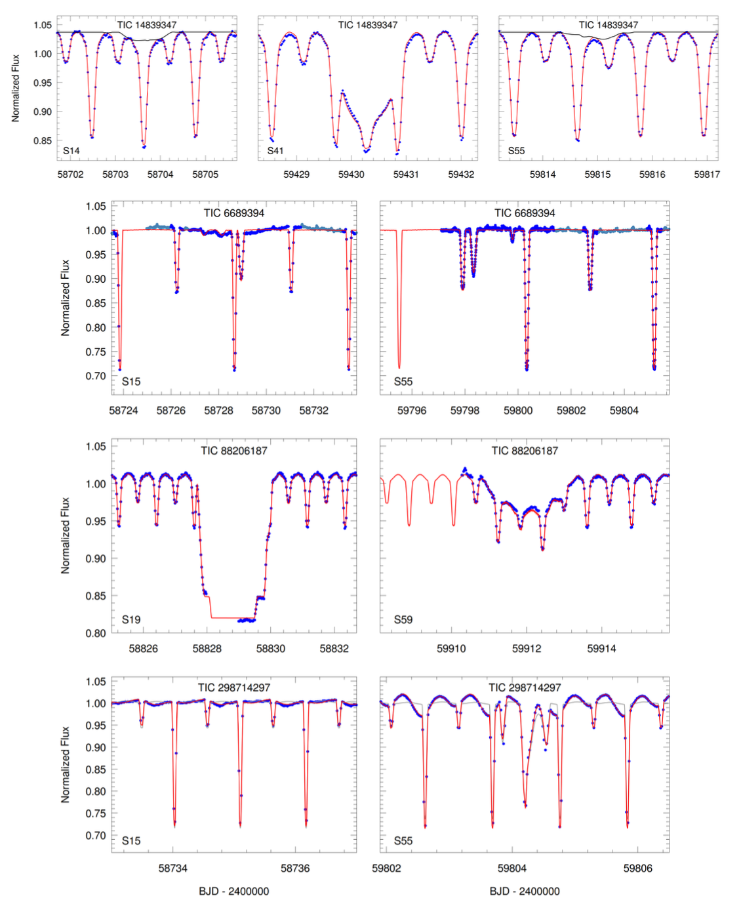
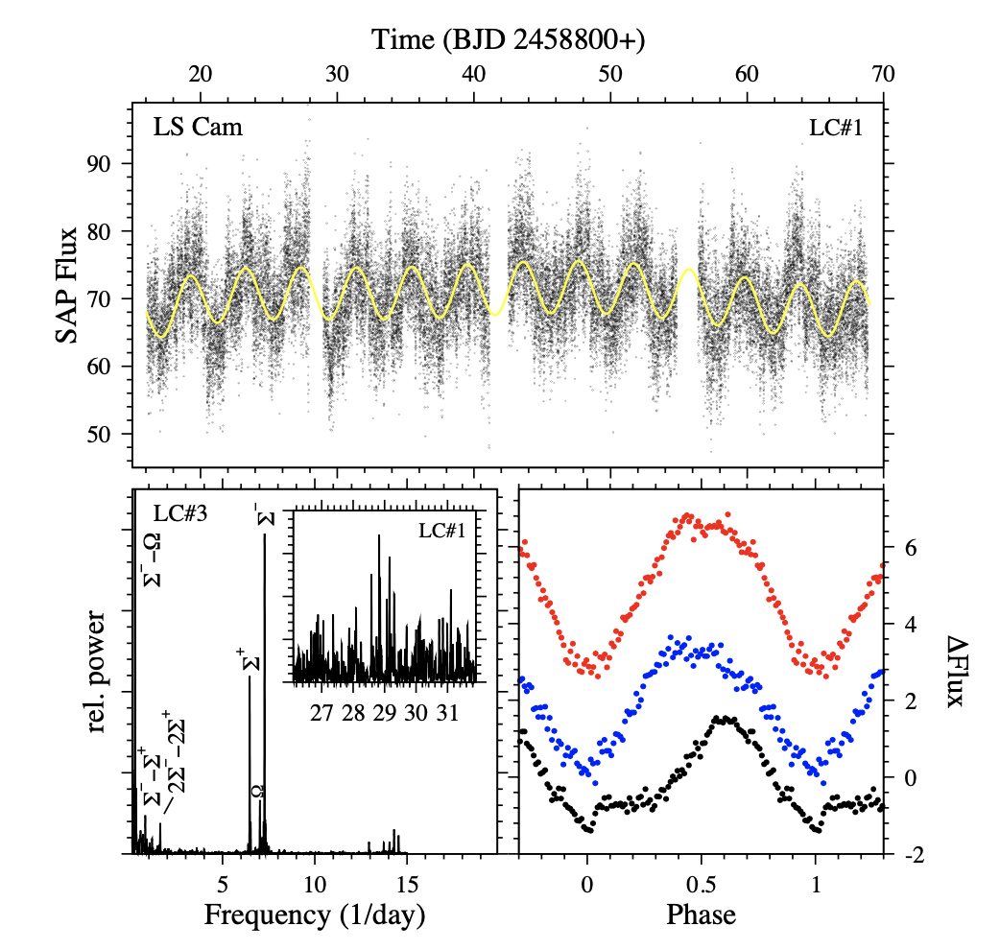
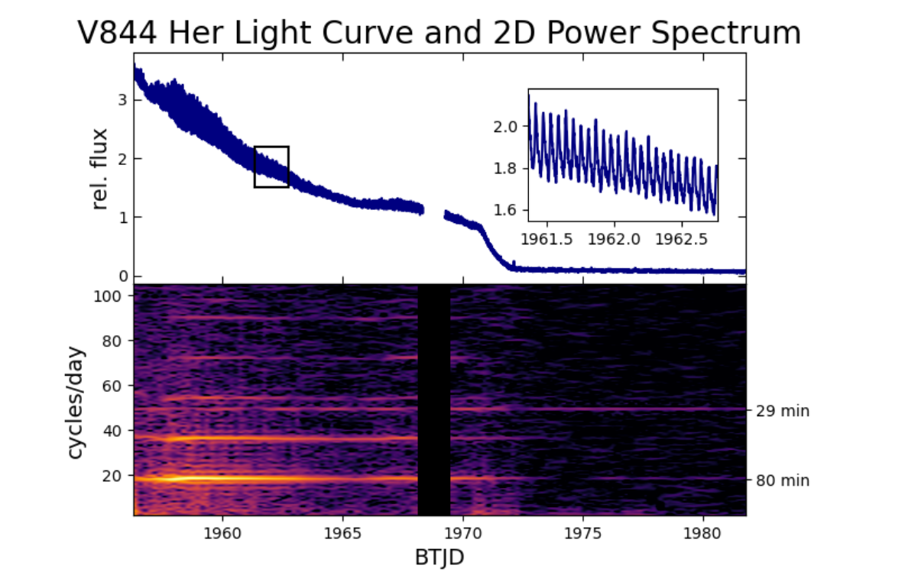

Welcome TESS followers to our latest news bulletin!
This week, we are looking at three recent papers from the archive. Enjoy!
Four New Compact Triply Eclipsing Triples found with Gaia and TESS (Czavalinga et al. 2023) :
Triply eclipsing triples represent a special geometrical configuration where an eclipsing binary is itself eclipsed and/or occulted by the tertiary star. These provide an excellent opportunity to study stellar formation and evolution in multiple systems. Czavalinga et al. (2023) present the discovery and analysis of four triply eclipsing triples TIC 88206187, TIC 14839347, TIC 298714297, and TIC 66893949. The authors utilized data from TESS, Gaia, ASAS-SN and ATLAS, spectral energy distribution, measured eclipse timing variations, and theoretical stellar evolution models. The four targets were observed by TESS in Sectors 14, 15, 19, 41, 55, 56, and 59 in long cadence, and all produced primary and secondary eclipses as well as prominent tertiary body eclipses; the binary eclipses are also readily seen in the archival photometry from ASAS-SN and ATLAS. Additionally, Gaia’s Non-Single-Star solutions confirm the triple nature of the systems, the lightcurves of three of the targets (TIC 88206187, TIC 14839347, TIC 298714297) exhibit notable ellipsoidal variations. The TESS photometry of TIC 298714297 also shows a clear rotational signal with a periodicity comparable to the orbital period of the inner binary. The authors combined all the available data into a comprehensive spectrophotometric-dynamical model and found that TIC 88206187, TIC 14839347, TIC 298714297, and TIC 66893949 are generally similar to known triply eclipsing triple systems. In particular, the component stars have masses in the range of 0.5 to 2.5 MSun, radii between 0.5 and 11.7 RSun, effective temperatures from ~3,600 K to ~9,000 K, and all four systems are nearly coplanar with mutual inclinations smaller than about 4 degrees. The inner orbital periods range between 1.1 and 4.8 days, with corresponding negligible eccentricities, while the outer periods are between 53 and 471 days, with relatively high eccentricity for TIC 66893949 (0.4). At a distance of about 140 pc, TIC 298714297 is one of the closest known triply eclipsing triples, and TIC 88206187 is one of the three known such systems where the outer period is short enough for potential tidal interactions between the inner binary and the tertiary star. Thanks to TESS data, Czavalinga et al. (2023) derived highly accurate physical and orbital parameters of four triply-ecliping triples, reaching percent-level precision on the individual stellar masses and sizes.
TESS light curves of cataclysmic variables -- III -- More superhump systems among old novae and novalike variables (Bruch 2023) :
Cataclysmic variables (CVs) are interacting binary stars where the orbital period is short enough for a late-type unevolved component to transfer mass to a white dwarf component via Roche-lobe overflow. If there is an accretion disk around the compact object, and depending on the mass transfer rate, CVs are classified as either dwarf novae or novalike variables. Bruch (2023) presents a detailed analysis of 23 novalike variables and old novae aimed at characterizing periodic and non-periodic photometric variations. The targets were drawn from a sample of 127 such stars listed in the Ritter & Kolb (2003) catalog, do not include AM Her type stars, and were all observed by TESS in short-cadence. The author utilized Fourier techniques and Lomb-Scargle analysis to calculate periodograms, without quantifying the respective false alarm probability. Bruch (2023) found that the lightcurves of all 23 studied targets show clear positive or negative superhumps, noted that the superhumps are detected for the first time in 19 out of the 23 systems, and argued that these represent a 50% increase in the number of novalike variable and old novae exhibiting such variability. The author explored the periodicity, consistency, variability, and waveform of the superhumps, and updated the corresponding orbital
periods for half of the investigated systems. Specifically, Bruch (2023) indicated that the negative superhumps dominate the positive superhumps by a factor of ~2.4 and argued that the Stolz-Schoembs relation between the superhump period and period excess for novalike variables needs to be updated. The author also highlighted 4 novalike variables exhibiting long-period quasi-periodic oscillations with periods in the following ranges: LS Cam 0.8 - 0.85 hours; LN UMa 2.2 - 2.7 hours; CN Vel 1.85 - 2.50; HS 0642 1.7 - 2.4 hours and 12 - 36 hours. Notably, the latter mandates the use of TESS photometry as covering the long timescale from the ground would be highly challenging. Utilizing the unique capabilities of TESS, Bruch (2023) argued that superhumps in novalike variables are more common than previously thought.
A Surprising Periodicity Detected During a Super-outburst of V844 Herculis by TESS (Greiveldinger et al. 2023) :
Speaking of cataclysmic variables, V844 Her is an SU UMa type dwarf nova with an orbital period of ~78 minutes showing evidence for both normal (and rare) outbursts and bright super-outbursts. The latter typically occur on a timescale of ~300 days. Greiveldinger et al. (2023) used TESS data to detect a super-outburst from V844 Her with an unexpected periodicity of about 29.3 minutes. The target was observed by TESS in Sectors 24, 25, 51, and 52 in 2-min cadence. It was in a super-outburst mode during Sector 24 and in a quiescent mode during the rest of the observations. It exhibits prominent superhump oscillations with a period of about 17.9 days, which are broadened by the archetypal SU UMa frequency variations. The 29.3-min signal identified by the authors is characterized by a narrow, unresolved periodogram peak. Greiveldinger et al. (2023) note that this is in contrast to the typical superhump frequencies associated with outbursts of this type of cataclysmic variables. The strength of the signal slowly decreases during Sector 24 and is still detectable in Sector 25, but is not present in Sectors 51 and 52. The authors utilized difference imaging to rule out data artifacts and confirm that the target is indeed the source of the 29.3 min signal. Additionally, Greiveldinger et al. (2023) searched for the signal during the quiescent stage in archival and follow-up observations of V844 Her from AAVSO, the MDM 1.3 m McGraw- Hill telescope, and XMM Newton but did not detect the oscillations. The authors note that the 29.3 min periodicity is not correlated with the known superhump variations, and is comparably more complex. Greiveldinger et al. (2023) argue that V844 Her might not be a typical intermediate polar due to its relatively low X-ray luminosity, suggest that the 29.3 min variations are mostly likely produced by the rotation of the white dwarf, and note that follow-up UV observations could test this hypothesis. TESS data enabled the detection of a surprising oscillations signal in the non-typical SU UMa type dwarf novae V844 Her.

Fig. 1: Taken from Czavalinga et al. (2023). Sections of TESS photometry (blue points) of four triply-eclipsing triple stars, showcasing primary and secondary eclipses from the inner binaries, as well as additional eclipses/occultations from the tertiary stars. The red curve represents the best-fit spectrophotometric-dynamical model.

Fig. 2: Taken from Bruch (2023). Upper panel: TESS photometry of LC Cam (black symbols) from Sectors 19 and 20 along with the respective best-fit model (yellow). Lower left panel: power spectrum for Sector 40. Inset panel shows the power spectrum for Sectors 19 and 20. Lower right: average waveform corresponding to orbital (black), positive superhump (blue) and negative (red) variations.

Fig. 3: Taken from Greiveldinger et al. (2023). Upper panel: A section of the Sector 24 TESS lightcurve of V844 Her highlighting the fading super-outburst and the corresponding superhump oscillations (inset panel). Lower panel: Corresponding 2-D power spectrum, with the known 80-min and the newly-discovered 29-min oscillations marked along the right edge of the panel.